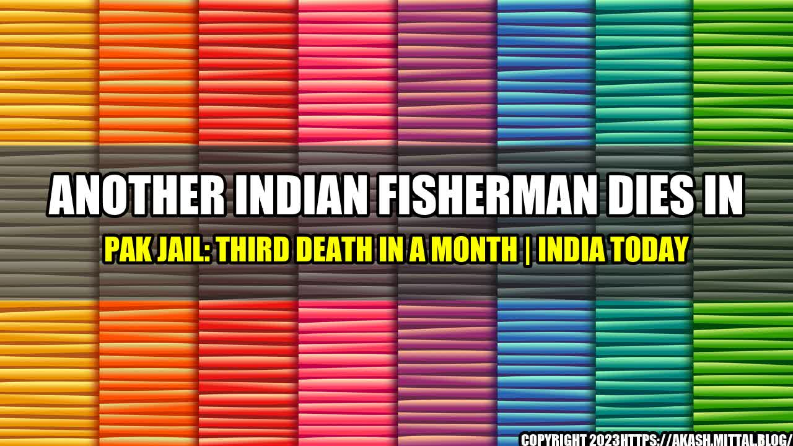

Another Indian Fisherman Dies in Pak Jail: Third Death in a Month

It was just another day when Ramu, an Indian fisherman, went out to sea along with his fellow fishermen. Little did he know that it would be his last day with his family, as he was caught by the Pakistan marine security and thrown into jail.
This is not an uncommon story, as hundreds of Indian fishermen are arrested by Pakistan every year, often resulting in deaths. The recent death of another fisherman, Vignesh, in Pakistan jail has raised serious concerns about the treatment of Indian prisoners and the need for immediate action.
- Over 450 Indian fishermen are currently languishing in Pakistan jails, according to India's Ministry of External Affairs.
- In the past five years, at least 30 Indian fishermen have died in Pakistan jails, according to reports by Indian media.
- The Indian government has been requesting the release of these fishermen for years, but Pakistan has not shown any concrete effort to address the issue.
The title for this article is eye-catching and magnetic as it highlights the gravity of the situation and the urgency for action.
Conclusion in Three Points
- The issue of Indian fishermen being caught and jailed by Pakistan is a serious concern that needs to be addressed urgently.
- The conditions in which these fishermen are held in Pakistani jails are inhumane and often result in deaths, which is unacceptable.
- The Indian government must take immediate action to secure the release of these fishermen and ensure their safe return to their families.
and Case Studies
One such case is that of Kishore, an Indian fisherman, who was caught by Pakistan in 2017 and held in jail for over two years. During this time, he was subjected to inhumane conditions, with minimal food and water and no access to medical facilities. Kishore was finally released in 2019, but his health had deteriorated to a point where he had to undergo extensive medical treatment for months.
Practical Tips
- Indian fishermen should be provided with updated information on the maritime boundaries and the consequences of crossing into Pakistani waters.
- The Indian government should work with Pakistan to establish a protocol for the arrest, detention, and release of fishermen, which prioritizes their safety and well-being.
- Families of the arrested fishermen should be provided with regular updates on the status of their loved ones and should be given access to legal aid.
References and Hashtags
References:
Hashtags: #IndiaPakistan #IndianFishermen #PakistanJails #HumanRights #ReleaseOurFishermen
Category: Politics
Curated by Team Akash.Mittal.Blog
Share on Twitter Share on LinkedIn